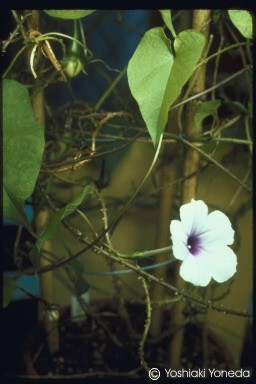

Ipomoea muricata
Taxonomic Details

----- Correct Name
----- Classification
----- Synonyms
----- Common Names
Other Biological Details
----- Habit and Habitat
----- Diagnostic Features
----- Reproductive Biology
---------- Breeding System
---------- Phenology
---------- Pollinators
---------- Seed Biology
----------Seed
germination
----------Cultivation
----- Major Pests and Diseases
Economic Potential and Uses
----- Parts Used
-----Uses
-----Medicinal Uses
----- Harvesting Practices
----- Produce and Products
----- Chemistry
----- Processing Techniques
----- Other uses
----- Economic Potential to the Country
----- Export Potential
Miscellaneous Information
Literature
Taxonomic
Details
Correct Name:Ipomoea
muricata
Family: Convolvulaceae
Synonyms : Calonyction muricatum,Ipomoea
muricata Jacq.,Convolvulus
colubrinus Blanco
Common Names :
English:Purple Moonflower
Back to Top
Other
Biological Details
HABIT & HABITAT :
Tunkin is found in
cultivation only in Pampanga, Luzon having been introduced from tropical
America.
Availability :
Status :
Back to Top
DIAGNOSTIC
FEATURES
This is a smooth,
climbing vine. The stems are rough, with small tuberculous outgrowths or
prickles. The leaves are smooth, soft, heart-shaped, 5 to 10 centimeters long,
and tapering abruptly into a narrow point at the tip. The flowers are large, 5
to 6 centimeters long, pale purple, and borne singly or in small-stalked
clusters resembling the morning glory. The fruit is rounded, and 10 to 15
millimeters in diameter. The seeds are polished, black, and smooth.
Back to Top
REPRODUCTIVE BIOLOGY
:
Breeding System :
Phenology :
Pollinators:
Seed Biology :
Seed
Germination :
Cultivation :
Back to Top
Major Pests and Diseases:
Pests:
Diseases:
Back to Top
Economic
Potential and Uses
Parts used:
Seeds.
Uses:
In the Philippines the seeds are vulnerary and are
considered a very efficacious antidotal remedy for poisoning. They are also said
to be purgative.
Harvesting Practices
Produce and Products
Back to Top
Chemistry
Three secondary and three quaternary alkaloids were detected by tlc in the
seeds.
Back to Top
Processing Techniques
Back to Top
Other Uses
1. The seeds are used chiefly as a substitute for those of Ipomoea
hederacea, seeming to have the same medicinal properties.
2.The juice of the plant is used as an insecticide.
Back to Top
Economical
Potential to the country
Back to Top
Export Potential
Back to Top
Miscellaneous
Information
Back to Top
Literature
1.A dictionary of Indian Medicinal Plants,1992,CIMAP,Lucknow,India,pp.259.
2.http://bpi.da.gov.ph/websitemedicinal/all/t/tunkin.htm
3. www.exot-nutz-zier.de/.../
Ipomoea_muricata.jpg
Back to Top